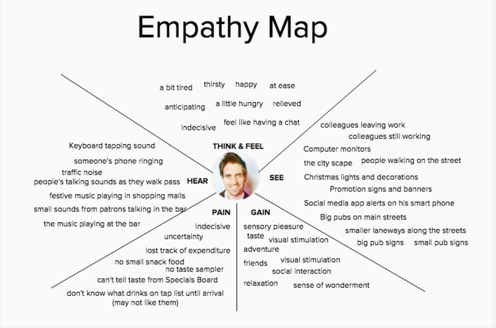

Our third project for General Assembly took place for approximately 2 weeks.
The group members that I was involved with in this project were Melanie and Sylvia.
Our target audience generally like going to small bars but they are not aware of their geographic existance. Most of them are open to trying out craft beers but they just don't know much about them.
We began our project by performing some research on beers and more specifically Craft beer
that would act as our prerequisite knowledge for the topic that we were about to study.
Since our client demographic generally consisted of the enthused drinking demographic, we decided to conduct research using various methods inorder to understand the needs of the client. This lead us to create an empathy map
Thoughts and Feelings